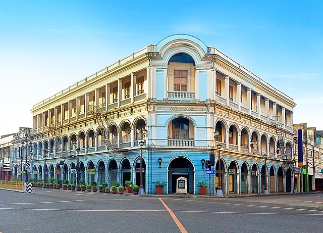
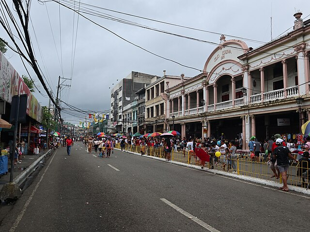
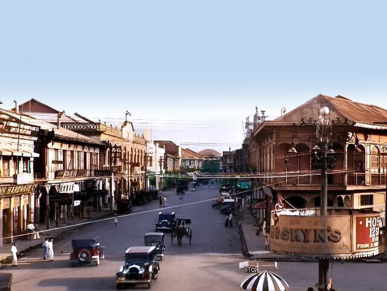

Calle Real
Discover Iloilo City's historic street filled with colonial-era architecture.
Start ExploringOverview
Calle Real is a historic street in Iloilo City lined with preserved colonial-era buildings. It reflects the city’s rich heritage and is a must-visit for history enthusiasts.

Top Attractions

Colonial architecture

Historic buildings

Shopping areas
Street views
Things To Do
Walk
Photography
Shopping
Explore

Travel Information
- Best Time: Daytime
- Location: Iloilo City
- Nearest Transport: Jeepneys and taxis
- Easily accessible by public transportation.
Travel Tips
Wear comfortable shoes
Bring a camera
Explore nearby streets
Suggested Itinerary
Morning
Explore heritage buildings
Afternoon
Visit shops and plazas
Evening
Enjoy street food and photos
Explore by Category
Islands
Crystal waters, white sands, and island adventures, your perfect tropical escape in Iloilo.
Learn more


Foods
Savor Iloilo's iconic flavors, from hearty soups to grilled favorites and fresh seafood delights.
Learn more


Historical
Walk through Iloilo's past with timeless churches, landmarks, and heritage streets.
Learn more